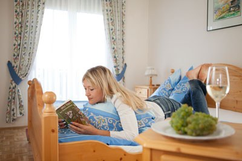

Traminerweg & Knochenmannwanderung
Von unserem Gasthof ausgehend wandern Sie entlang des Traminerweges durch die Klöcher Weingärten. Idyllisch gelegene Buschenschenken laden zum Einkehren ein, gepflegte Sonnenbänke zum Verweilen.
Übernachten
Sollten Sie Lust bekommen, ein Wochenende oder längere Zeit bei uns zu verbringen, bieten wir Ihnen gerne unsere gemütlich und liebevoll eingerichteten Zimmer an.
Die Zimmer
Wir verfügen über zwei Doppelzimmer mit Dusche, WC und Balkon mit Blick in die Weinberge. Lassen Sie die Schönheiten und die Genüsse des Tages Revue passieren, freuen Sie sich auf eine wohlige, gute Nacht und den kommenden Tag beim Palz.

Preise pro Person und Nächtigung
Die Zimmer sind nur zweimal vorhanden – eine frühzeitige Anfrage lohnt sich, besonders rund um das Backhendlturnier im Juli, das „Ga weint gehen“ am ersten September-Wochenende und das Weisenbläserfest im Oktober.
Bitte beachten Sie unseren Betriebsurlaub von 13. bis 19. Juli 2026 sowie die Ruhetage Montag und Dienstag (ausgenommen Feiertage).
PALZ – schönes Spiel
Die Traminer-Golfanlage zählt zu den schönsten der Steiermark. Wir sind Golf-Partner-Betrieb des Traminer Golf in Klöch.
Für das Greenfee bekommen Sie auf Anfrage eine Ermäßigung für die Traminer-Golfanlage Klöch. Kombinieren Sie eine Runde am Klöchberg mit Zimmer, Hendl und einem Glas Traminer.
Golf-Hotline
03475 2311
Bild antippen oder anklicken für die große Ansicht.
Rund ums Haus
Von unserem Gasthof ausgehend wandern Sie entlang des Traminerweges durch die Klöcher Weingärten. Idyllisch gelegene Buschenschenken laden zum Einkehren ein, gepflegte Sonnenbänke zum Verweilen.
Im neuen Degustationsraum verkosten Sie die PALZ-Weine mit Blick auf die Hänge des Klöchberges – ganz ohne Heimfahrt.
„Ga weint gehen“ am ersten Wochenende im September, Weisenbläserfest am zweiten Sonntag im Oktober: zwei Termine, für die sich eine Übernachtung besonders lohnt.
Verschenken
Mit unserem Palz-Genussgutschein können Sie Ihren Lieben auch einen Aufenthalt in unserem Haus schenken.